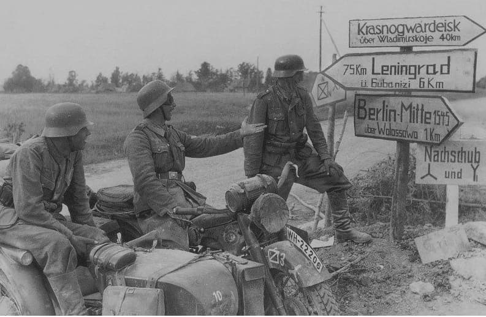
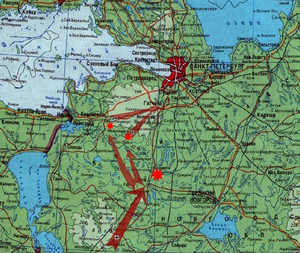

22 июня 1941 года началась война с Германией.
9 июля нашими войсками оставлен Псков.
10 июля начинаются бои на Лужском рубеже в районе г. Луга. Река Луга естественная преграда для наступающей армии.
Командование Ленинградским фронтом срочно кидает все ресурсы, включая мирных жителей, чтобы "врыться в землю" для создания рубежа обороны.
Прямой путь к Ленинграду - Рижское шоссе. Все силы кидаются на его уничтожение линиями обороны в районе города Луга.
Наткнувшись на укрепрайон и понеся потери, немцы ищут пути обхода.
Ближайшие мосты - Большой Сабск и Ивановское. Туда направляется 41-й механизированный корпус германской армии.
14 июля немецкие войска занимают Осьмино. 16 июля форсируют Лугу в районе Большого Сабска, несмотря на то, что мост красноармейцы успевают взорвать, в последний момент. И сходу, по мосту форсируют р.Лугу в районе Ивановского. Используется подразделение "БРАНДЕНБУРГ 800", самое результативное диверсионное подразделение вермахта. На обеих переправах немцы создают укрепленные плацдармы на правом берегу (нашем). И, временно, останавливаются для перегруппировки и подтягивания тылов.
Им навстречу срочно выдвигаются вооруженные формирования:
- к САБСКУ курсанты Ленинградского военно-пехотного училища им. Кирова
- к ИВАНОВСКОМУ вторая дивизия народного ополчения (ДНО) - (необученные добровольцы).
8 августа немцы начинают движение. Сминают наши части в районе Большого Сабска и Ивановского одновременно и, практически беспрепятственно, идут к Ленинграду. 13 августа занимают Молосковицы и Вруду, перерезают железную дорогу и шоссе Нарва-Ленинград. 16 августа занимают Волосово.
Волосовский район оккупирован. Население ожидает, что несет "новый порядок". А немецкие танковые колонны стремятся к Гатчине (Красногвардейск). По тем дорогам, что мы с вами сегодня ездим, запросто.
На смену коллективизации приходит оккупация. О жизни того периода сведения неоднозначные. В районе действовала 12-я Приморская партизанская бригада. Трагическим памятником тех лет остается сожженная деревня Большое Заречье. И все же, подлинная картина жизни людей, контакты с оккупантами и отношение к ним, способы выживания, сопротивления или сотрудничества остаются противоречивыми.
